กดเลือกดูกลุ่มสุนัขที่เข้ากันได้
คลิกเลือกกลุ่มด้านล่างเพื่อแสดงสุนัขในกลุ่มนั้นๆ ทันที (รวมครบ 30 สายพันธุ์)
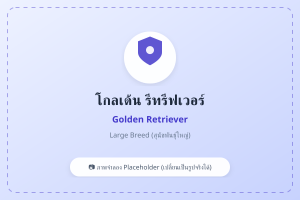
โกลเด้น รีทรีฟเวอร์ (Golden Retriever)
ใจดี อ่อนโยน เข้ากับเด็กได้ดี ฉลาดและฝึกง่าย ขวัญใจครอบครัว
ดูในหน้ารวมสายพันธุ์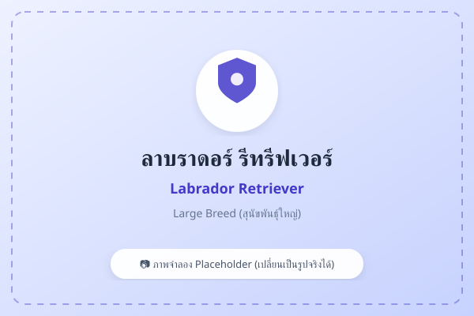
ลาบราดอร์ รีทรีฟเวอร์ (Labrador Retriever)
แข็งแรง พลังเยอะ นิยมฝึกเป็นสุนัขนำทางและสุนัขกู้ภัย
ดูในหน้ารวมสายพันธุ์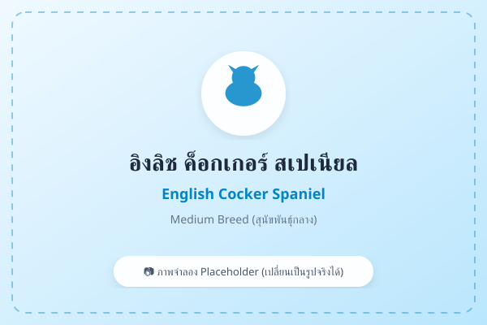
อิงลิช ค็อกเกอร์ สเปเนียล (English Cocker Spaniel)
หูยาว ขนสวย อารมณ์ดี กระตือรือร้น ชอบกิจกรรมกลางแจ้ง
ดูในหน้ารวมสายพันธุ์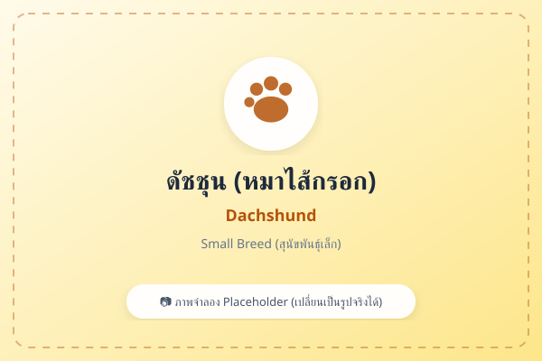
ดัชชุน / หมาไส้กรอก (Dachshund)
ตัวยาวขาสั้น ดมกลิ่นเก่ง ขี้สงสัย ซื่อสัตย์ (Hound ใน AKC)
ดูในหน้ารวมสายพันธุ์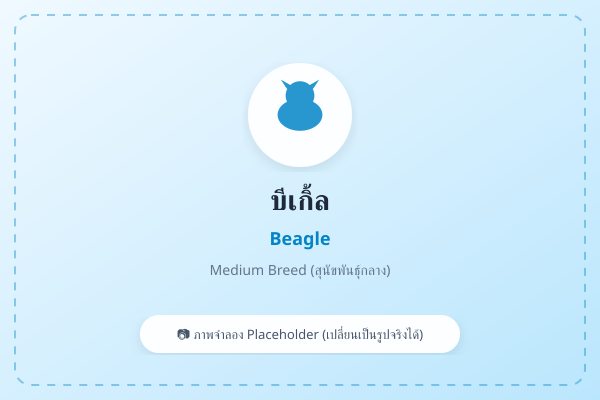
บีเกิ้ล (Beagle)
จมูกไวเป็นเลิศ กระตือรือร้น ชอบสังคม เป็นมิตรกับทุกคน
ดูในหน้ารวมสายพันธุ์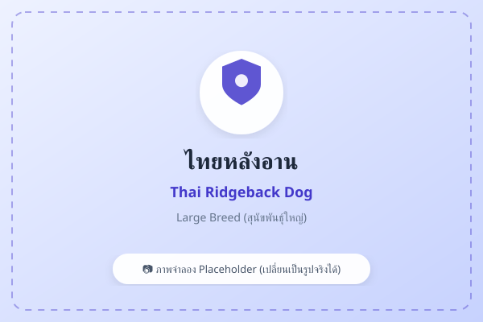
ไทยหลังอาน (Thai Ridgeback Dog)
สุนัขพื้นเมืองไทยแท้ มีอานบนหลัง แข็งแรง ปราดเปรียว รักษาอาณาเขตได้ดี
ดูในหน้ารวมสายพันธุ์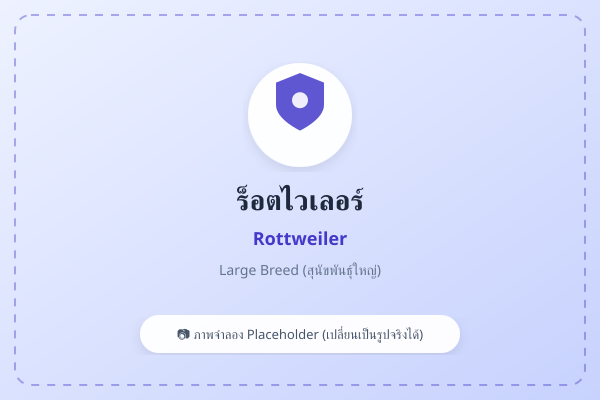
ร็อตไวเลอร์ (Rottweiler)
บึกบึน ทรงพลัง สุขุม เป็นสุนัขอารักขาชั้นเยี่ยมเมื่อได้รับการฝึกอย่างถูกต้อง
ดูในหน้ารวมสายพันธุ์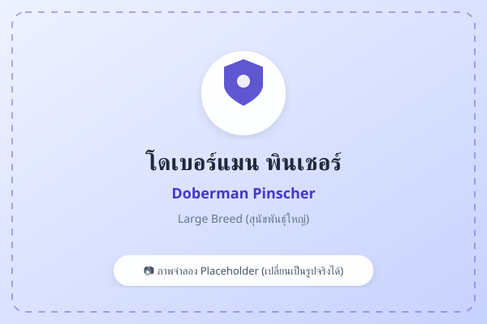
โดเบอร์แมน พินเชอร์ (Doberman Pinscher)
ปราดเปรียว สง่างาม ว่องไว จงรักภักดีและหวงแหนเจ้าของ
ดูในหน้ารวมสายพันธุ์เกรทเดน (Great Dane)
ยักษ์ใหญ่ใจดี ตัวสูงใหญ่แต่มีนิสัยนิ่ง เงียบ สงบ และติดเจ้าของ
ดูในหน้ารวมสายพันธุ์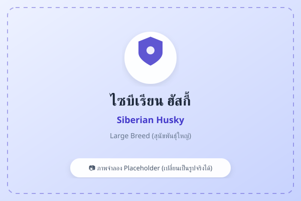
ไซบีเรียน ฮัสกี้ (Siberian Husky)
รูปร่างสง่างามเหมือนหมาป่า ตาคม พลังงานสูงมาก ขี้เล่นและมีความเป็นตัวเองสูง
ดูในหน้ารวมสายพันธุ์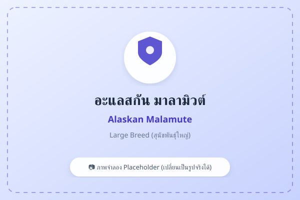
อะแลสกัน มาลามิวต์ (Alaskan Malamute)
ขนาดใหญ่กว่าฮัสกี้ โครงสร้างหนา ขนแน่น สุขุม อ่อนโยน
ดูในหน้ารวมสายพันธุ์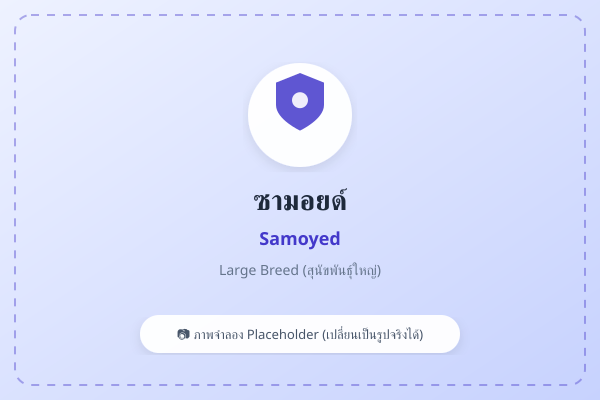
ซามอยด์ (Samoyed)
ขนขาวฟูนุ่ม มาพร้อม "Samoyed Smile" อารมณ์ดี เป็นมิตร รักทุกคน
ดูในหน้ารวมสายพันธุ์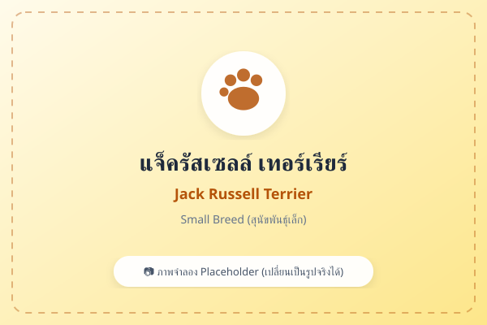
แจ็ครัสเซลล์ เทอร์เรียร์ (Jack Russell Terrier)
พลังงานล้นเหลือ คล่องแคล่ว ฉลาด ชอบวิ่งและไล่จับสิ่งของ
ดูในหน้ารวมสายพันธุ์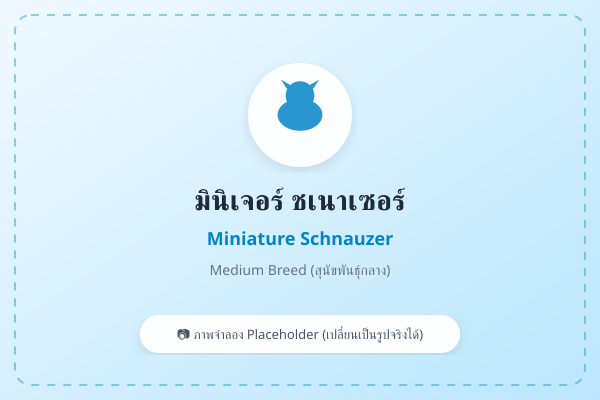
มินิเจอร์ ชเนาเซอร์ (Miniature Schnauzer)
มีเคราและคิ้วเป็นเอกลักษณ์ ฉลาด ตื่นตัว ซื่อสัตย์ ไม่ค่อยผลัดขน
ดูในหน้ารวมสายพันธุ์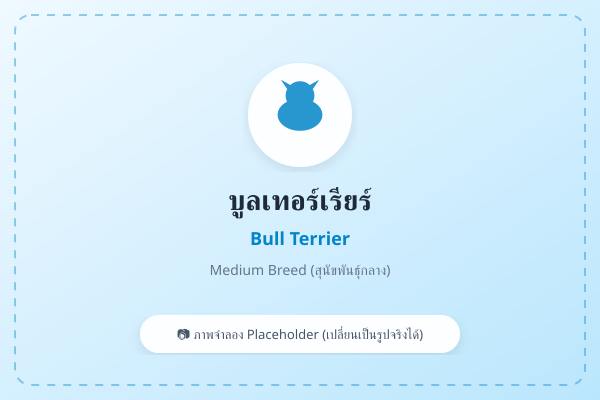
บูลเทอร์เรียร์ (Bull Terrier)
หัวรูปไข่ ตาเฉียง กล้ามเนื้อแน่น ขี้เล่น ซุกซน รักเจ้าของ
ดูในหน้ารวมสายพันธุ์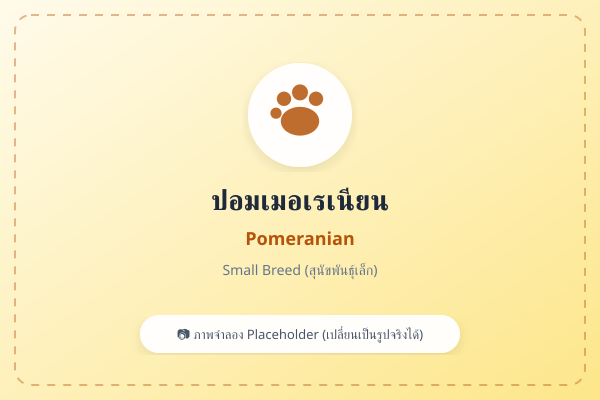
ปอมเมอเรเนียน (Pomeranian)
ขนฟูแน่น ตื่นตัว ขี้เล่น รักเจ้าของมาก พกพาสะดวก
ดูในหน้ารวมสายพันธุ์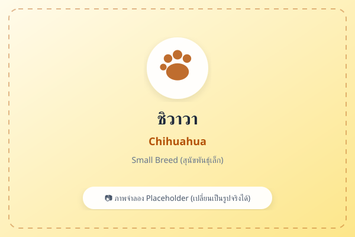
ชิวาวา (Chihuahua)
ตัวเล็กที่สุดในโลก พกพาง่าย กล้าหาญและหวงเจ้าของ
ดูในหน้ารวมสายพันธุ์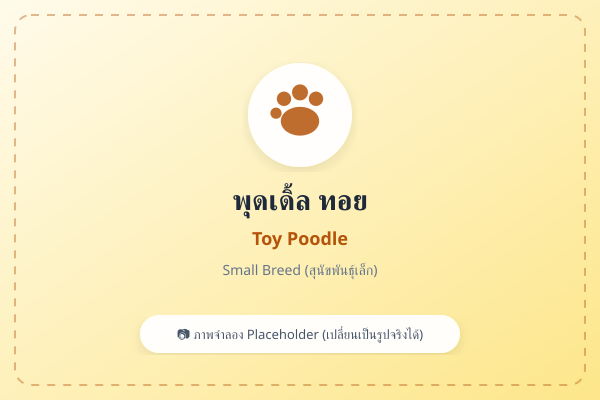
พุดเดิ้ล ทอย (Toy Poodle)
ฉลาดเป็นอันดับต้นๆ ฝึกง่าย ขนหยิกไม่ค่อยผลัด เหมาะกับคนเป็นภูมิแพ้
ดูในหน้ารวมสายพันธุ์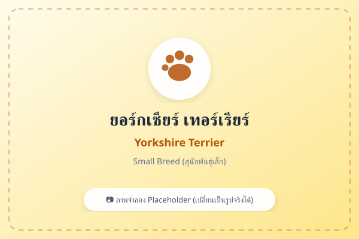
ยอร์กเชียร์ เทอร์เรียร์ (Yorkshire Terrier)
ขนยาวเงางามคล้ายเส้นผม บุคลิกมั่นใจ ร่าเริง สง่างาม
ดูในหน้ารวมสายพันธุ์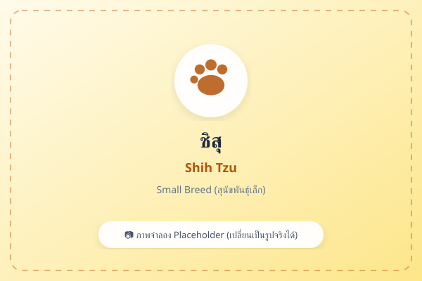
ชิสุ (Shih Tzu)
นิสัยนิ่ง เป็นมิตร ใจดี เข้ากับเด็กและสัตว์อื่นได้ดี ขนยาวนุ่ม
ดูในหน้ารวมสายพันธุ์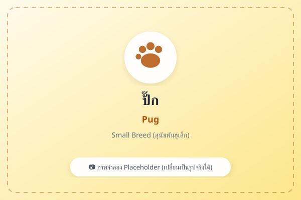
ปั๊ก (Pug)
หน้าสั้น อารมณ์ดี ตลก ขี้อ้อน ไม่ค่อยเห่า ชอบนอนข้างๆ เจ้าของ
ดูในหน้ารวมสายพันธุ์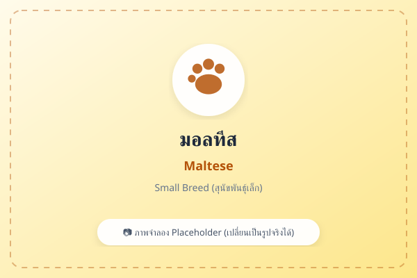
มอลทีส (Maltese)
ขนสีขาวล้วน นุ่มสลวย อ่อนโยน เรียบร้อย ชอบให้อุ้ม
ดูในหน้ารวมสายพันธุ์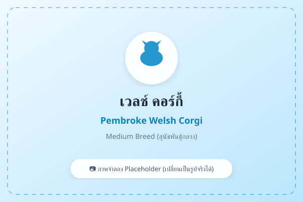
พ็อมโบรค เวลช์ คอร์กี้ (Pembroke Welsh Corgi)
ขาสั้น บั้นท้ายกลม อารมณ์ดี ฉลาด ขี้เล่น มีสัญชาตญาณต้อนสัตว์
ดูในหน้ารวมสายพันธุ์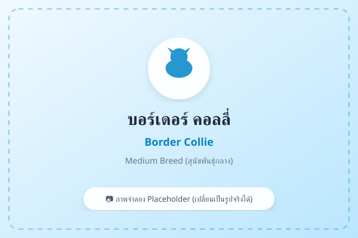
บอร์เดอร์ คอลลี่ (Border Collie)
สุนัขที่ฉลาดที่สุดในโลก เรียนรู้เร็วมาก มีสัญชาตญาณต้อนสัตว์สูง
ดูในหน้ารวมสายพันธุ์
เชทแลนด์ ชีพด็อก (Shetland Sheepdog)
คล้ายคอลลี่ขนาดเล็ก ขนยาวสวย ฉลาด อ่อนโยน จงรักภักดี
ดูในหน้ารวมสายพันธุ์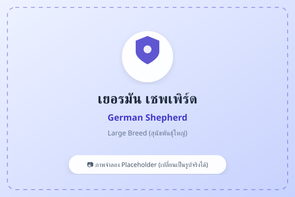
เยอรมัน เชพเพิร์ด (German Shepherd)
ฉลาด กล้าหาญ ซื่อสัตย์ นิยมใช้ในงานตำรวจและทหาร (Herding สากล)
ดูในหน้ารวมสายพันธุ์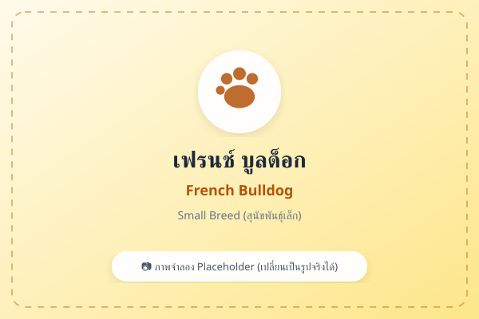
เฟรนช์ บูลด็อก (French Bulldog)
หน้าสั้น หูตั้ง ตัวตันกะทัดรัด นิสัยสงบ ไม่ชอบเห่า เหมาะกับคนเมือง
ดูในหน้ารวมสายพันธุ์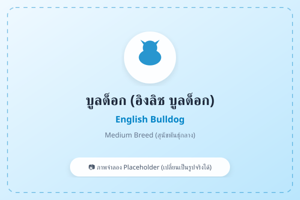
อิงลิช บูลด็อก (English Bulldog)
หน้าสั้น ตัวตัน รูปร่างหนา นิสัยใจดี สุภาพ รักสงบและติดบ้าน
ดูในหน้ารวมสายพันธุ์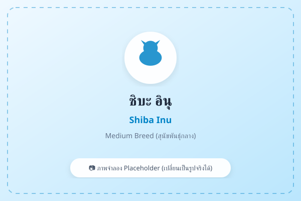
ชิบะ อินุ (Shiba Inu)
สายพันธุ์จากญี่ปุ่น มีความมั่นใจสูง รักความสะอาด รักอิสระ คล้ายแมว
ดูในหน้ารวมสายพันธุ์
ไทยบางแก้ว (Thai Bangkaew Dog)
สุนัขไทยแท้ ขนฟู หวงบ้าน หวงของ ซื่อสัตย์และภักดีต่อคนในครอบครัว
ดูในหน้ารวมสายพันธุ์